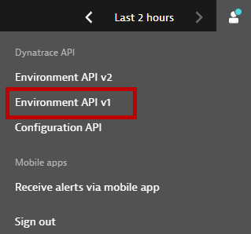
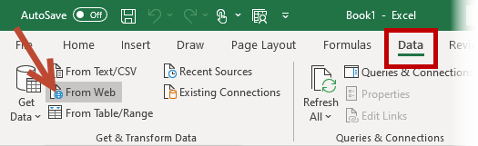
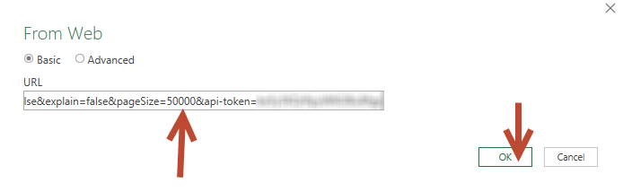
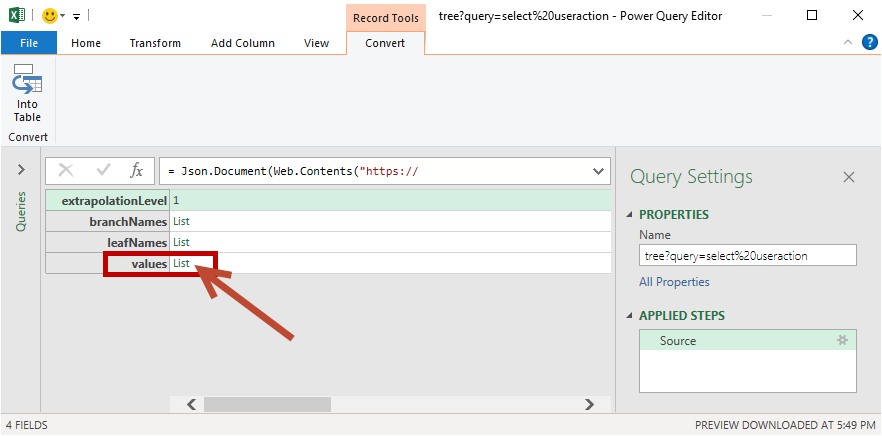
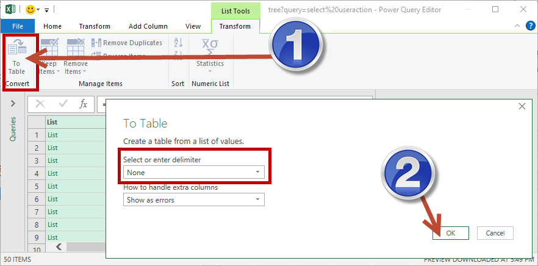
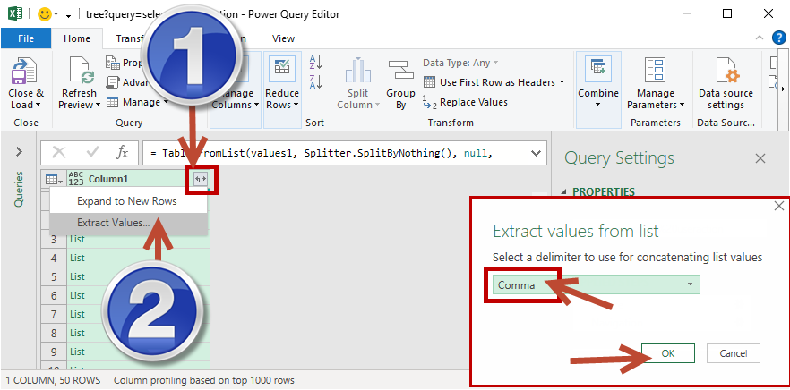
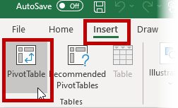
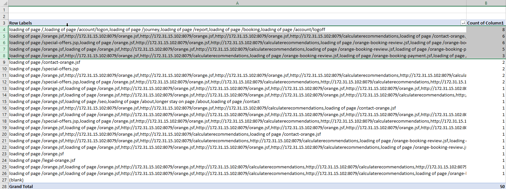
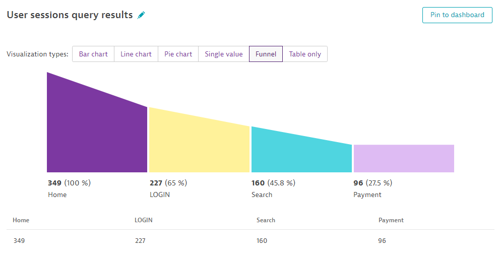
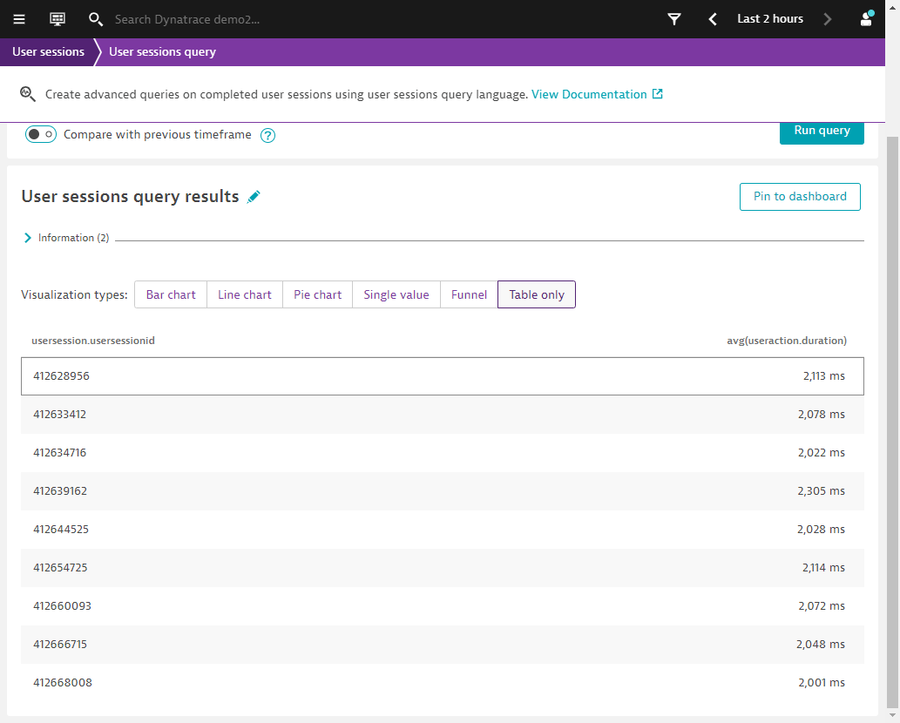

This repository contains the exercises for the Advanced USQL session.
Prerequisites
- Access to Demo Environment
- Microsoft Excel
What You'll Learn
- Intricacies/Gotchas of USQL
- USQL Tips and tricks in the field
- Extracting and manupulating the data in Excel
- Some advanced USQL for BizOps use cases
Warm up
What does each of the query do?
Go ahead to run this in Demo Environment -> User sessions
Query 1
select distinct hour(usersession.starttime), count(*)
from usersession
order by count(*) DESC
Query 2
select distinct hour(usersession.starttime), count(useraction.name)
from usersession
order by count(useraction.name) DESC
Query 3
select distinct hour(usersession.starttime), count(useraction.name)
from useraction
order by count(useraction.name) DESC
Challenge
- What does each of the query do?
- What are we actually querying for?
Query 1
SELECT useraction.name as "Page Name", COUNT(*) as "Page Views", COUNT(DISTINCT usersession.internalUserId) AS "Unique Page Views", AVG(useraction.duration) As "Average Session" FROM usersession WHERE useraction.name like "%rest%" GROUP BY useraction.name
Case in point:select useraction.name from usersession LIMIT 10
Query 2
SELECT useraction.name as "Page Name", COUNT(*) as "Page Views", COUNT(DISTINCT usersession.internalUserId) AS "Unique Page Views", AVG(useraction.duration) As "Average Session" FROM useraction WHERE useraction.name like "%rest%" GROUP BY useraction.name
Setting up the query
- Access: Bootcamp Managed Cluster
- userid:
usql - password: will be supplied
- userid:
- Launch API V1

- Authenticate
- Token: will be supplied

- Go to User Sessions
- Expand /userSessionQueryLanguage/tree (DO NOT USE TABLE)
- Click try it out
- Enter in your query
select useraction.name from usersession

- Execute
- Copy Request URL

Using Excel to slice and dice the data
- Open new spreadsheet, select Data and then select From Web

- Insert Request URL w/ token as a query parameter (use &pageSize=[N] to expand result set)
&pageSize=50000&api-token=[YourToken]
Example:
https://mou612.managed-sprint.dynalabs.io/e/4d5310f8-91e7-46f2-b2d5-2ceb0979f2bd/api/v1/userSessionQueryLanguage/tree?query=select%20useraction.name%20from%20usersession&addDeepLinkFields=false&explain=false&pageSize=50000&api-token=[YourToken]

- Click OK
- Select List (next to values)

- Select List again

- Select To Table Convert (Delimiter None)

- Click expand icon in Value header
- Extract values (Delimiter – comma)

- Click Close & Load

- Highlight Column A and Insert->Pivot Table


- Select box for Column 1 and drag Column 1 to Values

- Select a value in Column B and sort Largest to Smallest. Resize Column A as neccessary

Final Result

- Save spreadsheet
FUNNEL Query
SELECT FUNNEL(useraction.name="Loading of page /easytravel/home" AS "Home",
useraction.name = "/easytravel/rest/login" AS "LOGIN",
useraction.name = "/easytravel/rest/locations" AS "Search",
useraction.matchingConversionGoals = "Credit card validated" AS "Payment")
FROM usersession

FILTER Query
Use Case: I want all the user sessions & avg(duration) that hit validate credit card and the avg duration for all user actions is longer than 2 seconds.
Query
SELECT usersession.usersessionid, avg(useraction.duration)
FROM usersession
WHERE useraction.application='www.angular.easytravel.com'
AND useraction.duration>2000
AND useraction.name="/easytravel/rest/validate-creditcard"
GROUP BY usersession.usersessionid
Result: If any one of user action in the session has duration>2 seconds
So if we pull from useraction table, will it give us what we want?
SELECT usersession.usersessionid, avg(useraction.duration)
FROM useraction
WHERE useraction.application='www.angular.easytravel.com'
AND useraction.duration>2000
AND useraction.name="/easytravel/rest/validate-creditcard"
GROUP BY usersession.usersessionid
Looks better.

But am I getting the result that I want? Take any Usersession ID...
SELECT usersession.usersessionid FROM usersession WHERE usersession.usersessionid=<anyid>

What is the average user action duration here? (i.e. SUM(useraction duration) divide by total number of user actions)
What I really want: average user action >2 sec for every usersession.
Solution
If avg of all user actions duration>2 seconds
SELECT usersession.usersessionid, avg(useraction.duration) FILTER>2000
FROM usersession
WHERE useraction.application='www.angular.easytravel.com'
AND useraction.name="/easytravel/rest/validate-creditcard"
GROUP BY usersession.usersessionid

Take any Usersession ID...
SELECT usersession.usersessionid FROM usersession WHERE usersession.usersessionid=<anyid>

(9.46+0.133+0.145+1.35+0.602+0.727+0.27+3.33)/8 = 2.0002
GOAL!
We hope you enjoyed this lab and found it useful. We would love your feedback!